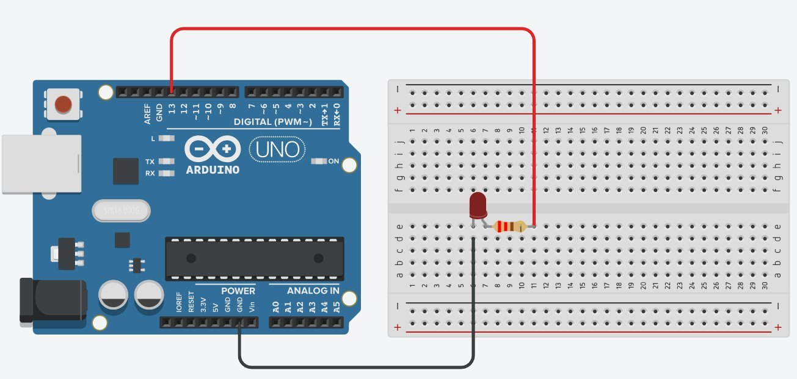
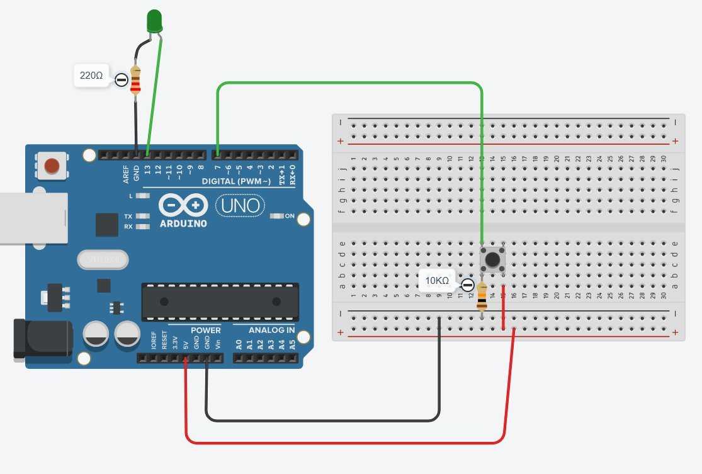

Hoy queremos que un LED parpadee 5 veces seguidas, espere 2 segundos, y vuelva a parpadear otras 5 veces. Una y otra vez, infinitamente.
Hasta ahora, para conseguir 5 parpadeos tendrías que copiar y pegar el bloque digitalWrite + delay + digitalWrite + delay cinco veces. ¿Y si fueran 50 parpadeos? ¿Y 500?
Hoy aprendemos a usar el bucle for, una estructura que repite el código que pongas dentro las veces que tú le digas. Cambiando un solo número, repites 5, 50 o 500 veces.
Antes de empezar a programar, abre tu ficha del reto y rellena las preguntas de la sección ENTENDER con tu pareja.
En la ficha tenéis una tabla con los pasos del programa. Algunos están rellenados como ejemplo; vuestra tarea es completar los huecos:
- ¿Cuántas veces se repiten los pasos 1-4 dentro del
for? - ¿Cuánto dura la pausa larga entre tandas?
for repite.
1. Montar el circuito en Tinkercad
Abre tinkercad.com, inicia sesión y crea un nuevo circuito. Monta este montaje: LED en pin 13 con su resistencia de 220Ω y cierre del circuito a GND.

2. Escribir el código
Cambia el editor a modo "Texto" en Tinkercad. Escribe este código, rellenando los espacios en blanco con los valores de tu diseño:
3. Entender el for
Lee el for así:
int i = 0→ empieza con i valiendo 0.i < 5→ repite mientras i sea menor que 5.i++→ al final de cada vuelta, súmale 1 a i.
Resultado: el código de dentro se ejecuta 5 veces, con i valiendo 0, 1, 2, 3 y 4. Cuando i llega a 5, ya no se cumple i < 5 y el bucle se acaba.
4. Probar y comprobar
- Pulsa Iniciar simulación en Tinkercad.
- Observa el LED.
5. Entregar el reto base
- Guarda el proyecto en Tinkercad.
- Pulsa Compartir y copia el enlace público.
- Pega el enlace en el recuadro morado de tu ficha.
- Sube la ficha a Google Classroom.
Si tu LED parpadea correctamente y has entregado el reto base, lánzate a la ampliación: El LED nervioso de verdad.
Comportamiento esperado
- 🟢 Si NO pulsas el botón: el LED parpadea LENTO (500 ms encendido, 500 ms apagado) de forma indefinida.
- 🔴 Si pulsas el botón: el LED parpadea RÁPIDO (100 ms encendido, 100 ms apagado) 10 veces seguidas y vuelve solo al parpadeo lento anterior.
Circuito de la ampliación
Al circuito anterior le añades un pulsador conectado al pin 7 con una resistencia pull-down de 10kΩ a GND (igual que en S02). Monta este circuito:

Pista de programación
En la ficha tienes un esqueleto incompleto del código. Combina dos cosas que ya conoces:
- Un
ifque comprueba si el pulsador está en HIGH (lo aprendiste en S02). - Un
forque hace 10 parpadeos rápidos (lo acabas de aprender hoy).
Después del if, fuera de él, pones el código del parpadeo lento (un único parpadeo, sin for). Como el loop() se repite infinitamente, el parpadeo lento se ejecuta una y otra vez por sí solo.
delay(). Lo aceptamos como aprendizaje: lo arreglaremos en sesiones más avanzadas.